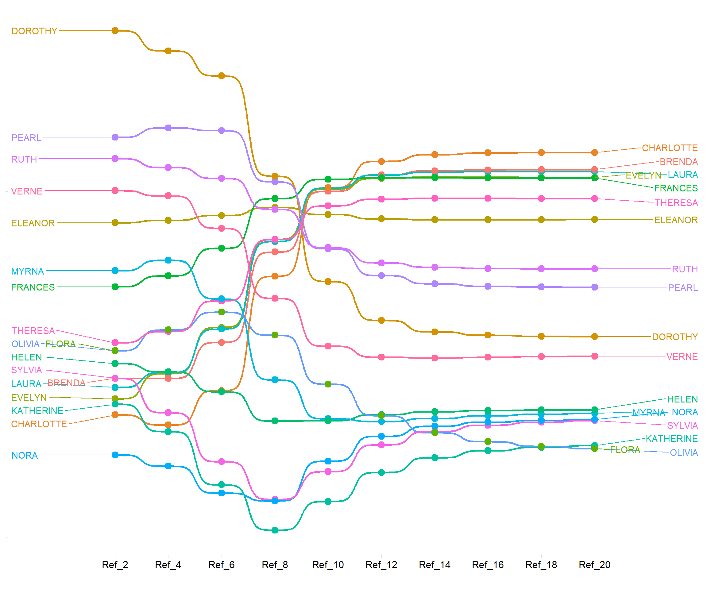
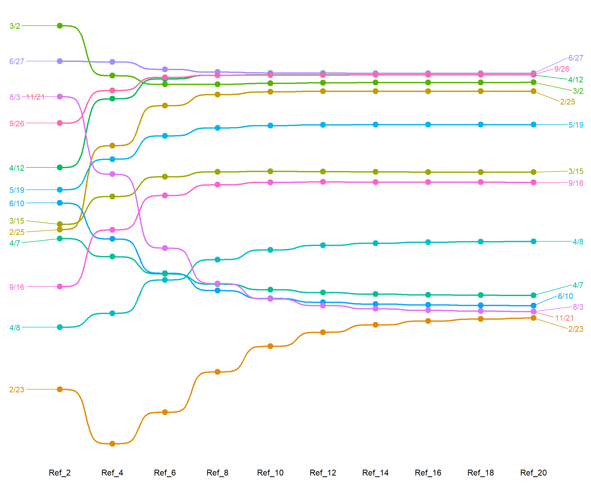

The Method of Reflections in Two-Mode Networks
In a highly cited piece, (Hidalgo and Hausmann 2009) (HH) motivated what they saw at the time as a novel approach to assigning meaningful scores to nodes in a two-mode network, using what they called a “reflective” approach. HH’s original empirical application was to the two-mode country-by-product networks. Hence, they referred to their approach as a way to extract the “economic complexity” of countries in the world system (and dually the complexity of given products).
Of course, just as with the fitness/complexity approach, there is no logical connection between the formal method of iterative finding scores for nodes in two-mode networks and the particular case of economic trade since the approach proposed can be used to analyze any two-mode data matrix. As will be obvious, the HH approach belongs to the extensive line of approaches to derive prestige scores for nodes in two-mode networks that we have reviewed, which included Bonacich and PageRank-style approaches.
How does the HH reflective scoring work? Let’s define a two-mode network composed of a set of people \(P\) and their affiliation relations to a set of groups \(G\) can be represented by an affiliation matrix \(\mathbf{A}\) of dimensions \(|P| \times |G|\) with people along the rows and groups across the columns, where \(|P|\) is the cardinality of the people set and \(|G|\) is the cardinality of the group set, with cell entries \(a_{pg}= 1\) if person \(p\) is affiliated with group \(g\) and \(a_{pg}= 0\) otherwise.
Given this, the degree-centrality of people is given by:
\[ C^R_p(1) = \sum_g a_{pg} \label{eq:R1_p} \tag{1}\]
And for groups:
\[ C^R_g(1) = \sum_p a_{pg} \label{eq:R1_g} \tag{2}\]
That is, the first-order centrality of people is the row sum of the entries in the affiliation matrix \(\mathbf{A}\), and the column sums of the same matrix give the first-order centrality of groups.
As noted by Hidalgo and Hausmann (2009), the key to the reflective approach to computing the “complexity” of countries and products is the observation that, once we have these first-order quantities, it is possible to compute second-order quantities \(C^R(2)\) for both people and groups using the averaged first-order centralities of the entities in the other mode they are connected to.
For people, these are given by:
\[ C^R_p(2) = \frac{1}{C^R_p(1)}\sum_g a_{pg}C^R_g(1) \label{eq:R2_p} \tag{3}\]
And for groups:
\[ C^R_g(2) = \frac{1}{C^R_g(1)}\sum_p a_{pg}C^R_p(1) \label{eq:R2_g} \tag{4}\]
While Equation ref0 assigns a high value to people who belong to a lot of groups, ref1 assigns a high value to people who, on average, belong to large groups (e.g., whenever \(a_{pg}*= 1\) and \(C^R_g(1)\) is a big number). In the same way, while ref0 assigns a high value to groups that have lots of members, ref1 assigns a high value to groups that, on average, have members who themselves have lots of memberships (e.g., whenever \(a_{pg}= 1\) and \(C^R_p(1)\) is a big number).
Of course, we can keep on going and define “third-order” reflections; for the people, these are given by:
\[ C^R_p(3) = \frac{1}{C^R_p(1)}\sum_g a_{pg}C^R_g(2) \label{eq:R3_p} \tag{5}\]
And for groups:
\[ C^R_g(3) = \frac{1}{C^R_g(1)}\sum_p a_{pg}C^R_p(2) \label{eq:R3_g} \tag{6}\]
As we saw, while for people, ref1 measured the average size of the groups they join, ref2 assigns a high value to people who, on average, belong to groups who are themselves attended by highly active members (e.g., whenever \(a_{pg}= 1\) and \(C^R_g(2)\) is a big number).
In the same way, while ref1 assigns a high value to groups whose members have lots of memberships, ref2 assigns a high value to groups that, on average, have members who themselves (also on average) belong to large groups (e.g., \(a_{pg}= 1\) and \(C^R_p(2)\) is a big number).
Note that for people, the even-numbered reflection \(C^R_p(2)\) assigns scores based on a formal feature of the groups they belong to (in this case, the group sizes). On the other hand, the odd-numbered reflection \(C^R_p(3)\) assigns scores based on a formal feature of the members of the groups they belong to (in this case, the average size of the groups they belong to).
In the same way, for the groups, the even-numbered reflection \(C^R_g(2)\) assigns scores based on a formal feature of the people who belong to them (in this case, their activity). On the other hand, the odd-numbered reflection \(C^R_g(3)\) assigns scores based on a formal feature of the other groups their members belong to(in this case, their average group size).
While these are distinct metrics in principle, in practice, the ordering of the nodes in each mode ends up being identical across even and odd scores after their rank ordering “freezes” past a given number of iterations (proportional to the network size).
More generally, Hidalgo and Hausmann (2009) show that we can define a series of reflective quantities for people and groups (whose verbal and substantive interpretation becomes more complex as the number of iterations increases).
For people, these are given by:
\[ C^R_p(q) = \frac{1}{C^R_p(1)}\sum_g a_{pg}C^R_g(q-1) \label{eq:Rq_p} \tag{7}\]
And for groups:
\[ C^R_g(q) = \frac{1}{C^R_g(1)}\sum_p a_{pg}C^R_p(q-1) \label{eq:Rq_g} \tag{8}\]
refq says that the reflective score of a person pat iteration q is the sum of the reflective scores the groups they belong to at the \(q-1\) iteration (\(C^R_g(q-1)\)) divided by their number of memberships \(C^{R}_p(1)\).
refq says that the \(q^{th}\) group reflective score is the sum of the reflective scores of their members at the \(q-1\) iteration \(C^R_p(q-1)\), divided by the number of group members \(C^R_g(1)\).
1 Method of Reflections in the Southern Women Data
Let’s see how this would work in a real two-mode network. To do that, we load up our trusty Southern Women (SW) data:
Now, we need a function that does all of the reflections that we just spoke about. Here’s one that accomplishes that, which is slight modification of the tm.status function from the two-mode prestige lecture notes, to store the values of the prestige score of each node at each iteration in a matrix:
Code
reflections <- function(x, iter = 20) { # x is a matrix with people as rows and groups as columns iters is number of reflections
z <- t(x)
p.c <- matrix(0, nrow(x), iter) # initialize person centralities
g.c <- matrix(0, ncol(x), iter) # initialize group centralities trajectory matrix
rownames(p.c) <- rownames(x)
rownames(g.c) <- colnames(x)
colnames(p.c) <- paste("Ref_", c(1:iter), sep = "")
colnames(g.c) <- paste("Ref_", c(1:iter), sep = "")
p.c[, 1] <- rowSums(x) # person degree centrality
g.c[, 1] <- colSums(x) # group degree centrality
k <- 1 # initializing counter
while (k < iter) {
p.c[, k + 1] <- (x %*% g.c[, k]) * p.c[, 1]^-1 # assign person average centrality of groups they belong to
g.c[, k + 1] <- (z %*% p.c[, k]) * g.c[, 1]^-1 # assign group average centrality of people in the group
k <- k + 1 # increase counter
} # end while loop
return(list(p.c = p.c, g.c = g.c))
} # end functionThe function above takes the biadjacency matrix \(\mathbf{A}\) as input and returns two objects:
- A matrix
p.cwith people as the rows and the as many columns as there are reflections, containing the reflective scores at each iteration for persons in each column. - A matrix
g.cwith groups as the rows and the as many columns as there are reflections, containing the reflective scores at each iteration for groups in each column.
And let’s try it out:
Let’s check out the person scores at the 18th reflection:
EVELYN LAURA THERESA BRENDA CHARLOTTE FRANCES ELEANOR PEARL
8.237399 8.237471 8.237136 8.237493 8.237705 8.237390 8.236873 8.236036
RUTH VERNE MYRNA KATHERINE SYLVIA NORA HELEN DOROTHY
8.236263 8.235172 8.234456 8.234045 8.234358 8.234379 8.234508 8.235424
OLIVIA FLORA
8.234058 8.234058 This all look like slightly different versions of the same number! The reason for this is as Hidalgo and Hausmann (2009) note, is that the scores begin to converge as the number of reflections increase. To get noticeable differences, we need to scale the higher reflection scores using the standard normalization:
\[ \tilde{C}^R =\frac{C^R-\bar{C}^R}{\sigma_{C^R}} \tag{9}\]
Where \(\bar{C}^R\) is the mean reflective score and \(\sigma_{C^R}\) is the standard deviation of the reflective scores. The resulting scores will have a mean of zero and variance of 1.0.
In R we can do this using the native scale function:
[,1]
EVELYN 1.1235228
LAURA 1.1743094
THERESA 0.9398214
BRENDA 1.1895381
CHARLOTTE 1.3377969
FRANCES 1.1176566
ELEANOR 0.7563908
PEARL 0.1715174
RUTH 0.3304853
VERNE -0.4321409
MYRNA -0.9320071
KATHERINE -1.2190721
SYLVIA -1.0001263
NORA -0.9855713
HELEN -0.8958773
DOROTHY -0.2556010
OLIVIA -1.2103213
FLORA -1.2103213
attr(,"scaled:center")
[1] 8.23579
attr(,"scaled:scale")
[1] 0.001431558Better!
Recall also that the Hidalgo and Hausmann (2009) reflections iterate between odd and even scores. We want only one of those. So let’s choose the even columns for persons and groups:
And now we can put them in fancy tables, as in Table 1:
| Ref_2 | Ref_4 | Ref_6 | Ref_8 | Ref_10 | Ref_12 | Ref_14 | Ref_16 | Ref_18 | Ref_20 | |
|---|---|---|---|---|---|---|---|---|---|---|
| CHARLOTTE | -0.94 | -1.03 | -0.73 | 0.27 | 1.03 | 1.26 | 1.32 | 1.33 | 1.34 | 1.34 |
| BRENDA | -0.62 | -0.62 | -0.31 | 0.47 | 1.00 | 1.15 | 1.18 | 1.19 | 1.19 | 1.19 |
| LAURA | -0.70 | -0.57 | -0.19 | 0.57 | 1.03 | 1.14 | 1.17 | 1.17 | 1.17 | 1.17 |
| EVELYN | -0.80 | -0.58 | -0.18 | 0.58 | 1.02 | 1.11 | 1.13 | 1.13 | 1.12 | 1.12 |
| FRANCES | 0.17 | 0.27 | 0.51 | 0.94 | 1.11 | 1.12 | 1.12 | 1.12 | 1.12 | 1.12 |
| THERESA | -0.31 | -0.21 | 0.05 | 0.58 | 0.88 | 0.93 | 0.94 | 0.94 | 0.94 | 0.94 |
| ELEANOR | 0.73 | 0.75 | 0.79 | 0.86 | 0.80 | 0.76 | 0.75 | 0.76 | 0.76 | 0.76 |
| RUTH | 1.28 | 1.21 | 1.11 | 0.85 | 0.51 | 0.38 | 0.34 | 0.33 | 0.33 | 0.33 |
| PEARL | 1.47 | 1.55 | 1.53 | 1.08 | 0.50 | 0.27 | 0.20 | 0.18 | 0.17 | 0.17 |
| DOROTHY | 2.40 | 2.22 | 2.00 | 1.13 | 0.22 | -0.12 | -0.22 | -0.25 | -0.26 | -0.26 |
| VERNE | 1.01 | 0.96 | 0.68 | 0.07 | -0.34 | -0.44 | -0.44 | -0.44 | -0.43 | -0.43 |
| HELEN | -0.49 | -0.57 | -0.74 | -0.99 | -0.99 | -0.94 | -0.91 | -0.90 | -0.90 | -0.89 |
| MYRNA | 0.31 | 0.40 | 0.07 | -0.63 | -0.97 | -1.00 | -0.97 | -0.95 | -0.93 | -0.92 |
| NORA | -1.28 | -1.38 | -1.62 | -1.68 | -1.34 | -1.12 | -1.04 | -1.00 | -0.99 | -0.98 |
| SYLVIA | -0.62 | -0.92 | -1.34 | -1.67 | -1.43 | -1.20 | -1.08 | -1.03 | -1.00 | -0.99 |
| KATHERINE | -0.84 | -1.08 | -1.55 | -1.94 | -1.69 | -1.44 | -1.31 | -1.25 | -1.22 | -1.20 |
| OLIVIA | -0.38 | -0.20 | -0.05 | -0.25 | -0.67 | -0.94 | -1.09 | -1.17 | -1.21 | -1.23 |
| FLORA | -0.38 | -0.20 | -0.05 | -0.25 | -0.67 | -0.94 | -1.09 | -1.17 | -1.21 | -1.23 |
| * Scores normalized to unit variance. |
| Ref_2 | Ref_4 | Ref_6 | Ref_8 | Ref_10 | Ref_12 | Ref_14 | Ref_16 | Ref_18 | Ref_20 | |
|---|---|---|---|---|---|---|---|---|---|---|
| 6/27 | 1.24 | 1.24 | 1.17 | 1.14 | 1.13 | 1.13 | 1.13 | 1.13 | 1.13 | 1.13 |
| 9/26 | 0.64 | 0.96 | 1.09 | 1.11 | 1.11 | 1.11 | 1.11 | 1.11 | 1.11 | 1.11 |
| 4/12 | 0.22 | 0.88 | 1.07 | 1.11 | 1.11 | 1.11 | 1.11 | 1.11 | 1.11 | 1.11 |
| 3/2 | 1.59 | 1.10 | 1.02 | 1.02 | 1.03 | 1.03 | 1.04 | 1.04 | 1.04 | 1.04 |
| 2/25 | -0.38 | 0.43 | 0.81 | 0.92 | 0.95 | 0.95 | 0.95 | 0.95 | 0.95 | 0.95 |
| 5/19 | 0.00 | 0.30 | 0.52 | 0.60 | 0.62 | 0.63 | 0.63 | 0.63 | 0.63 | 0.63 |
| 3/15 | -0.33 | -0.06 | 0.13 | 0.18 | 0.18 | 0.18 | 0.17 | 0.17 | 0.17 | 0.17 |
| 9/16 | -0.93 | -0.39 | -0.05 | 0.05 | 0.07 | 0.08 | 0.08 | 0.08 | 0.07 | 0.07 |
| 4/8 | -1.33 | -1.19 | -0.87 | -0.67 | -0.58 | -0.54 | -0.51 | -0.50 | -0.50 | -0.50 |
| 4/7 | -0.47 | -0.65 | -0.81 | -0.91 | -0.96 | -0.99 | -1.01 | -1.01 | -1.02 | -1.02 |
| 6/10 | -0.13 | -0.47 | -0.80 | -0.97 | -1.05 | -1.09 | -1.10 | -1.11 | -1.12 | -1.12 |
| 11/21 | 0.90 | 0.15 | -0.56 | -0.91 | -1.05 | -1.12 | -1.15 | -1.16 | -1.17 | -1.18 |
| 8/3 | 0.90 | 0.15 | -0.56 | -0.91 | -1.05 | -1.12 | -1.15 | -1.16 | -1.17 | -1.18 |
| 2/23 | -1.93 | -2.45 | -2.15 | -1.76 | -1.51 | -1.38 | -1.30 | -1.27 | -1.25 | -1.24 |
| * Scores normalized to unit variance. |
We can see in Table 1 that in higher order reflections, the scores have converged to a steady value. Some of persons/groups receive big positive scores, while others receive negative scores, suggestive of strong differentiation in HH reflective scores for the SW data.
A neat way to visualize data like that in Table 1 is using a bump chart. We can do this in R using the program ggbump. First, we need to transform the data in Table 1 to “long” format. We use dplyr and tidyr to do that:
Code
# A tibble: 6 × 3
person Ref k
<chr> <ord> <dbl>
1 EVELYN Ref_2 -0.799
2 EVELYN Ref_4 -0.580
3 EVELYN Ref_6 -0.178
4 EVELYN Ref_8 0.585
5 EVELYN Ref_10 1.02
6 EVELYN Ref_12 1.11 Code
# A tibble: 6 × 3
group Ref k
<chr> <ord> <dbl>
1 6/27 Ref_2 1.24
2 6/27 Ref_4 1.24
3 6/27 Ref_6 1.17
4 6/27 Ref_8 1.14
5 6/27 Ref_10 1.13
6 6/27 Ref_12 1.13Now we can plot the persons and groups in their reflective score trajectory across the even reflections. The result looks like .


As -1 shows, {Dorothy} begins pretty high on the list according to the second reflection (the average size of the groups she belongs to is big) but loses that advantage as we move to further reflections, ending up closer to the bottom of the middle. Meanwhile, {Charlotte, Brenda} begin with pretty low scores on the second reflection, but end up at the top by the 20th.
As -2 shows, there’s less volatility across reflections in the group ranks, but there is still some non-trivial reshuffling by the end.
2 The Method of Reflections as Correspondence Analysis
As Dam et al. (2021) show, it turns out that the equilibrium scores computed by the method of reflections are none other than our old friend Correspondence Analysis! Let’s see how this works.
If you recall from the CA for two-mode networks lecture notes, in a two-mode network the first dimension of the CA scores (for persons) are equivalent to the second eigenvector of a matrix \(\mathbf{W}\) which is obtained from the information in the biadjacency matrix \(\mathbf{A}\) like this:
And we get the (real part of the) second eigenvector for the matrix like this:
[1] -0.24086413 -0.25389472 -0.19699941 -0.25768209 -0.29332258 -0.24023748
[7] -0.15396144 -0.01170823 -0.05064337 0.13065696 0.24914639 0.31499509
[13] 0.26300900 0.26263739 0.24339931 0.09130661 0.33019362 0.33019362For groups, the relevant CA matrix W.g is:
And we get the second eigenvector of that matrix:
[1] -0.24086413 -0.25389472 -0.19699941 -0.25768209 -0.29332258 -0.24023748
[7] -0.15396144 -0.01170823 -0.05064337 0.13065696 0.24914639 0.31499509
[13] 0.26300900 0.26263739 0.24339931 0.09130661 0.33019362 0.33019362And we can see that these scores are perfectly correlated with the equilibrium reflection scores: